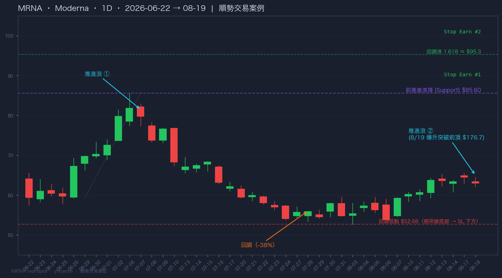

01
前頂作為支持位
選取的支持位是前頂位置（前推進浪頂）。前頂被突破後轉為支持，價格回測該位時提供進場機會。
✓ 支持位 = 前頂（前推進浪頂）
Trend Continuation Trading · 順勢交易
趨勢延續的核心：找出一支持位（前頂位置），當價格略為升穿前頂後急速返回前頂之上時買入。 下跌趨勢相反亦然。止損放於假突破底部，止盈看前推進浪頂與回調浪 1.618。
趨勢延續，於趨勢未出現過度延伸的狀態下，找出一支持位作為進場點。
選取的支持位是前頂位置（前推進浪頂）。前頂被突破後轉為支持，價格回測該位時提供進場機會。
當價格略為升穿前頂後急速返回前頂之上時買入——即突破後回測確認（Breakout & Retest）。
下跌趨勢中，前底作為阻力位，價格略為跌穿前底後急速返回前底之下時賣出。對稱操作。
一套完整的順勢交易，包含四個關鍵位置。
價格突破前頂後回測，返回前頂之上即為入場點。等待急速返回確認，避免在假突破中進場。
止損設於假突破的底部（價格回測時短暫跌破支持位所形成的低點下方）。跌破即離場，風險有限。
第一個獲利目標是前推進浪頂（Stop Earn #1）——之前推進浪的高點，突破後成為目標阻力。
第二個獲利目標是回調浪的 1.618 延伸（Stop Earn #2）——斐波那契延伸目標，捕捉趨勢的主升段。
第二個推進浪的突破品質，決定這筆交易的成敗。
第二個推進浪需要突破第一個推進浪一段明顯距離。太短會是假突破，做不成突破回測 / 回調，進場點不成立。
太長：趨勢有較高機率終結。高位買入者帳面出現虧損，假突破反彈後他們會傾向止賺 / 止蝕離場——拋壓會壓垮趨勢。
假突破的幅度不能太多，Momentum 不能太強。幅度太大可能是真突破（向下），風險增大。
2026 年 6–8 月真實數據，展示「前推進浪頂 → 回調 → 突破 → 目標」的完整結構。

推進浪 ①：6/26 起 $59.23 → 7/6 前推進浪頂 $85.60（+45%）。回調：7/7 起回落至 8/3 低位 $52.66（−38%，深度回調）。推進浪 ②：8 月中重新上升，8/19 爆升突破前頂 $85.60 至 $176.7。
7/6 高位成為關鍵支持位（紫色虛線）。價格升穿後，此位由阻力轉為支持，回測即為進場點；同時是止盈 #1。
8/3 低位為回調極值（紅色虛線）。假突破底部 → 止損位設於其下方。MRNA 此浪回調深（−38%），屬較高風險案例。
由回調低點延伸的1.618 目標（綠色虛線）：$52.66 + ($85.60 − $59.23) × 1.618 ≈ $95.33。突破前頂後的首個主要目標。
一句話記住：前頂突破後回測，返回之上買入；止損放假突破底，止盈看前高與 1.618。
確認趨勢 — 趨勢未過度延伸（第二個推進浪明顯突破第一個推進浪，幅度適中）。
找前頂 — 以前推進浪頂為支持位，等待價格升穿後急速返回。
進場 — 價格返回前頂之上即買入；下跌趨勢相反（前底之下賣出）。
止損 — 假突破底部下方；止盈前推進浪頂（#1）與回調浪 1.618（#2）。
過濾 — 突破太短（假突破）、太長（趨勢終結）、幅度大動能強（真突破）皆放棄。